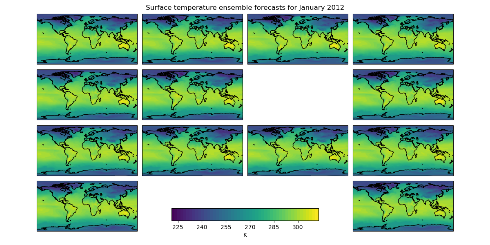
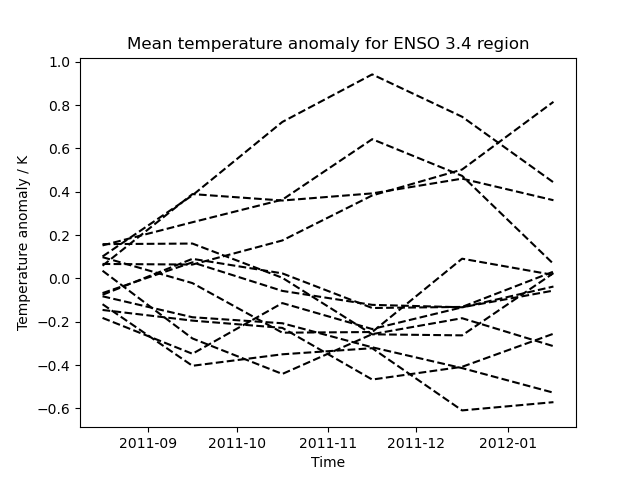

Note
Click here to download the full example code
Seasonal ensemble model plots¶
This example demonstrates the loading of a lagged ensemble dataset from the GloSea4 model, which is then used to produce two types of plot:
The first shows the “postage stamp” style image with an array of 14 images, one for each ensemble member with a shared colorbar. (The missing image in this example represents ensemble member number 6 which was a failed run)
The second plot shows the data limited to a region of interest, in this case a region defined for forecasting ENSO (El Nino-Southern Oscillation), which, for the purposes of this example, has had the ensemble mean subtracted from each ensemble member to give an anomaly surface temperature. In practice a better approach would be to take the climatological mean, calibrated to the model, from each ensemble member.
- 
- 
import matplotlib.pyplot as plt
import numpy as np
import iris
import iris.plot as iplt
def realization_metadata(cube, field, fname):
"""
A function which modifies the cube's metadata to add a "realization"
(ensemble member) coordinate from the filename if one doesn't already exist
in the cube.
"""
# add an ensemble member coordinate if one doesn't already exist
if not cube.coords("realization"):
# the ensemble member is encoded in the filename as *_???.pp where ???
# is the ensemble member
realization_number = fname[-6:-3]
import iris.coords
realization_coord = iris.coords.AuxCoord(
np.int32(realization_number), "realization"
)
cube.add_aux_coord(realization_coord)
def main():
# extract surface temperature cubes which have an ensemble member
# coordinate, adding appropriate lagged ensemble metadata
surface_temp = iris.load_cube(
iris.sample_data_path("GloSea4", "ensemble_???.pp"),
iris.Constraint("surface_temperature", realization=lambda value: True),
callback=realization_metadata,
)
# -------------------------------------------------------------------------
# Plot #1: Ensemble postage stamps
# -------------------------------------------------------------------------
# for the purposes of this example, take the last time element of the cube
last_timestep = surface_temp[:, -1, :, :]
# Make 50 evenly spaced levels which span the dataset
contour_levels = np.linspace(
np.min(last_timestep.data), np.max(last_timestep.data), 50
)
# Create a wider than normal figure to support our many plots
plt.figure(figsize=(12, 6), dpi=100)
# Also manually adjust the spacings which are used when creating subplots
plt.gcf().subplots_adjust(
hspace=0.05,
wspace=0.05,
top=0.95,
bottom=0.05,
left=0.075,
right=0.925,
)
# iterate over all possible latitude longitude slices
for cube in last_timestep.slices(["latitude", "longitude"]):
# get the ensemble member number from the ensemble coordinate
ens_member = cube.coord("realization").points[0]
# plot the data in a 4x4 grid, with each plot's position in the grid
# being determined by ensemble member number the special case for the
# 13th ensemble member is to have the plot at the bottom right
if ens_member == 13:
plt.subplot(4, 4, 16)
else:
plt.subplot(4, 4, ens_member + 1)
cf = iplt.contourf(cube, contour_levels)
# add coastlines
plt.gca().coastlines()
# make an axes to put the shared colorbar in
colorbar_axes = plt.gcf().add_axes([0.35, 0.1, 0.3, 0.05])
colorbar = plt.colorbar(cf, colorbar_axes, orientation="horizontal")
colorbar.set_label("%s" % last_timestep.units)
# limit the colorbar to 8 tick marks
import matplotlib.ticker
colorbar.locator = matplotlib.ticker.MaxNLocator(8)
colorbar.update_ticks()
# get the time for the entire plot
time_coord = last_timestep.coord("time")
time = time_coord.units.num2date(time_coord.bounds[0, 0])
# set a global title for the postage stamps with the date formated by
# "monthname year"
plt.suptitle(
"Surface temperature ensemble forecasts for %s"
% (time.strftime("%B %Y"),)
)
iplt.show()
# -------------------------------------------------------------------------
# Plot #2: ENSO plumes
# -------------------------------------------------------------------------
# Nino 3.4 lies between: 170W and 120W, 5N and 5S, so define a constraint
# which matches this
nino_3_4_constraint = iris.Constraint(
longitude=lambda v: -170 + 360 <= v <= -120 + 360,
latitude=lambda v: -5 <= v <= 5,
)
nino_cube = surface_temp.extract(nino_3_4_constraint)
# Subsetting a circular longitude coordinate always results in a circular
# coordinate, so set the coordinate to be non-circular
nino_cube.coord("longitude").circular = False
# Calculate the horizontal mean for the nino region
mean = nino_cube.collapsed(["latitude", "longitude"], iris.analysis.MEAN)
# Calculate the ensemble mean of the horizontal mean. To do this, remove
# the "forecast_period" and "forecast_reference_time" coordinates which
# span both "relalization" and "time".
mean.remove_coord("forecast_reference_time")
mean.remove_coord("forecast_period")
ensemble_mean = mean.collapsed("realization", iris.analysis.MEAN)
# take the ensemble mean from each ensemble member
mean -= ensemble_mean.data
plt.figure()
for ensemble_member in mean.slices(["time"]):
# draw each ensemble member as a dashed line in black
iplt.plot(ensemble_member, "--k")
plt.title("Mean temperature anomaly for ENSO 3.4 region")
plt.xlabel("Time")
plt.ylabel("Temperature anomaly / K")
iplt.show()
if __name__ == "__main__":
main()
Total running time of the script: ( 0 minutes 20.201 seconds)